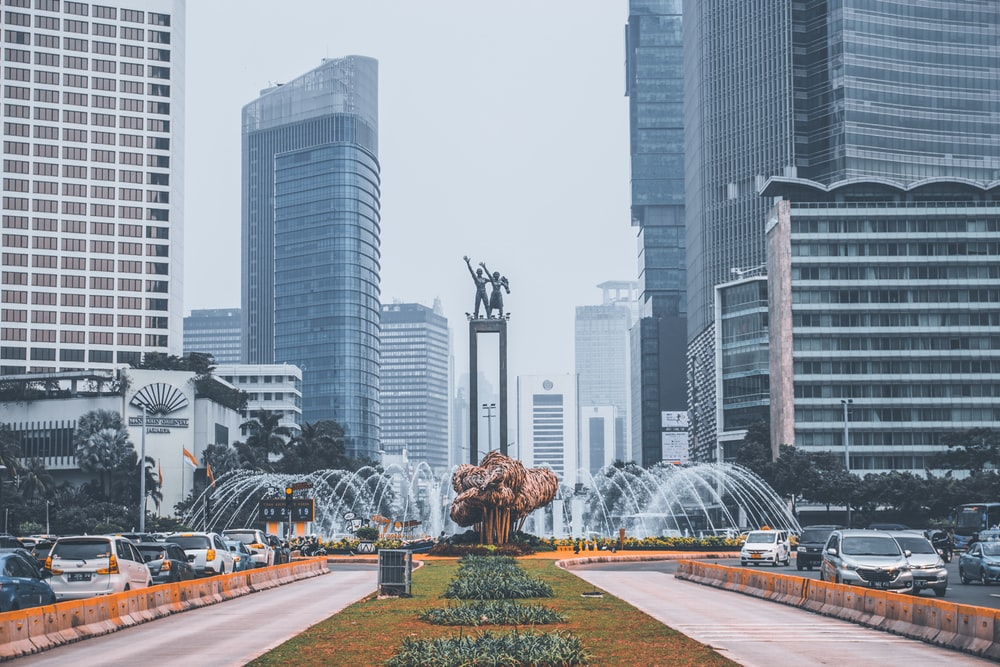
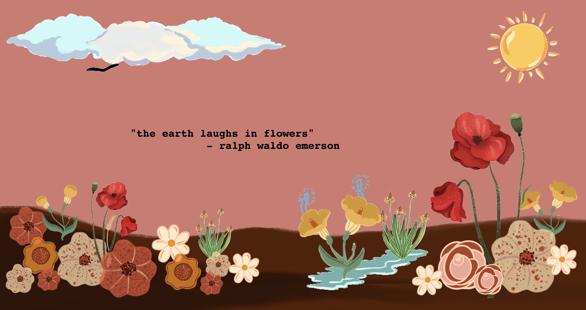
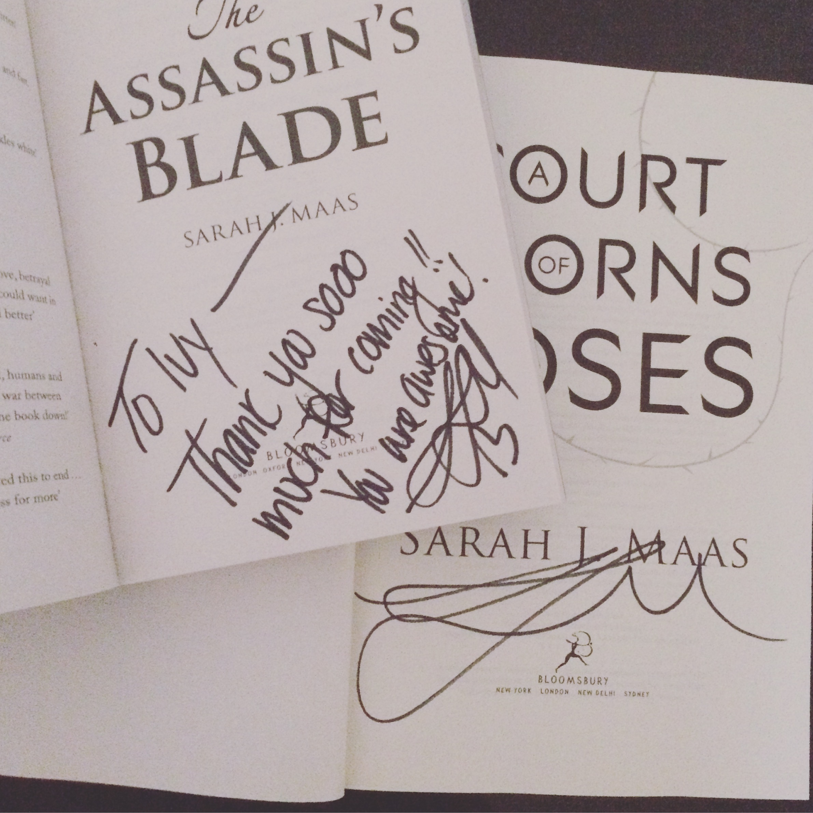
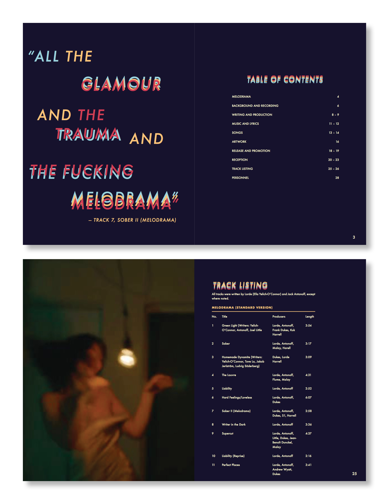
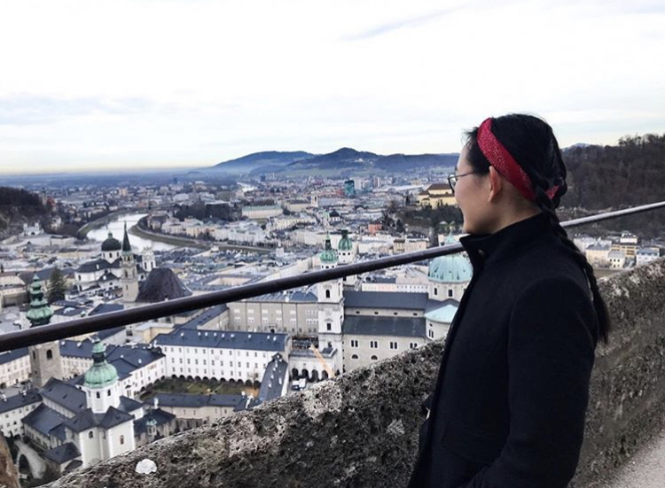
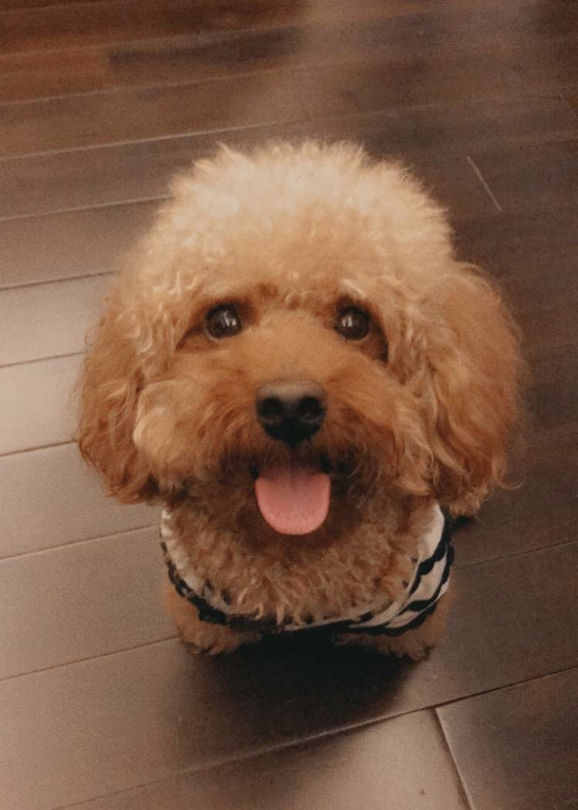

All About Me
Where are you from?
Jakarta, Indonesia
When is your birthday?
March 10
Why did you choose to study Communication Design?
I am interested in branding and advertising, and also combining illustration with design.
What are you most inspired by?
My interests.
What has been your favorite class so far? Why?
Creative Computing because I was introduced to coding, which I had never done before. I was also able to incorporate illustrations into my work. It made the class a lot more fun and interesting.
What are you hoping to learn in this class?
More in-depth JavaScript and possibly some motion graphics.
What do you like to do in your spare time?
I enjoy reading novels (fantasy, historical fiction, young adult, romance), drawing and painting, going to the ballet, trying out new foods, and writing stories and poetry.
When you imagine a graphic designer, what do you think they do on a day to day?
Working for different brands and companies to design brand identities, advertisements, etc. for print and web.
When you imagine a developer, what do you think they do on a day to day?
Code websites and apps.
Where do you see yourself after graduating? What kind of job do you want to have?
Designing packaging, logos, ads, etc. in a design firm, hopefully in New York.
Do you consider yourself an artist, a designer, both, or neither?
Both.
What kind of design classes have you taken before this one?
Typography and Creative Computing.
Do you know most of the students in our class already?
Only around three people.
List your favorite typefaces.
- Baskerville
- Iowan Old Style
- Adobe Garamond Pro
- Helvetica
What are you top 3 favorite colors?
- Mustard yellow
- Red
- Peach
Which artists do you like?
Xi Pan, Alfons Mucha, Arthur Rackham, and Egon Schiele.
List out some music that you like to listen to
Lorde, Lana Del Rey, Taylor Swift, Halsey, Ludovico Einaudi
Did anything interesting happen over winter break?
I went around Europe with my family. We visited Zurich, Salzburg, Vienna, Bratislava, Prague, Nuremberg, Strasbourg, and Paris. We went to a lot of Christmas markets and museums. I also saw Le Corsaire (a ballet) live for the first time in Vienna.
Have you ever built a website?
No
Do you have any questions for me?
Not at the moment.
What is your first memory of using the internet?
I remember learning how to Google questions properly in elementary school for research projects.
Do you have a favorite place to visit?
I love going to Japan because of the food, hygiene, and kind people.
Do you speak any other languages?
Indonesian.
What is your favorite food?
I love unagi (Japanese grilled eels) and basically any kind of noodles.
What is your favorite animal?
Dogs!
Do you have a pet?
Yes, a toy poodle named Angel.
Is there any other information you’d like me to know?
Nope!





